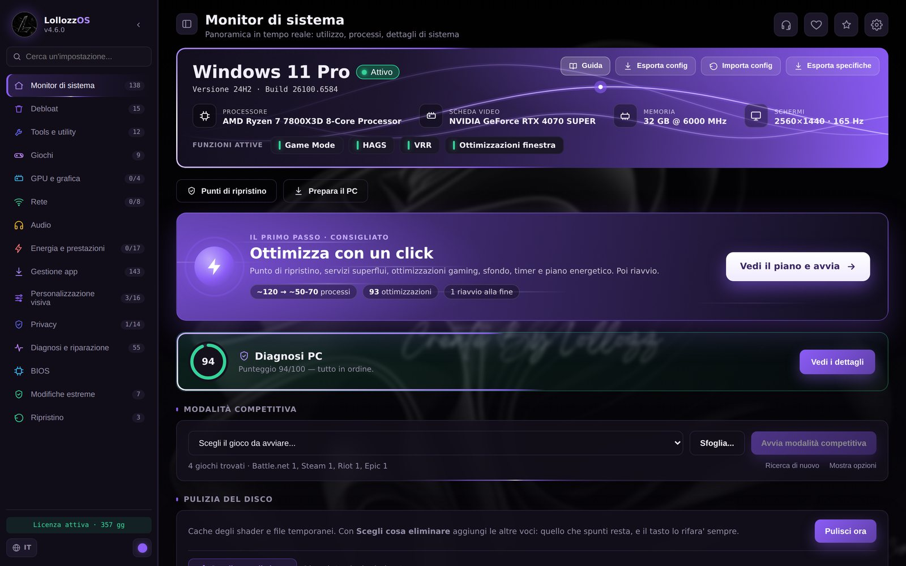
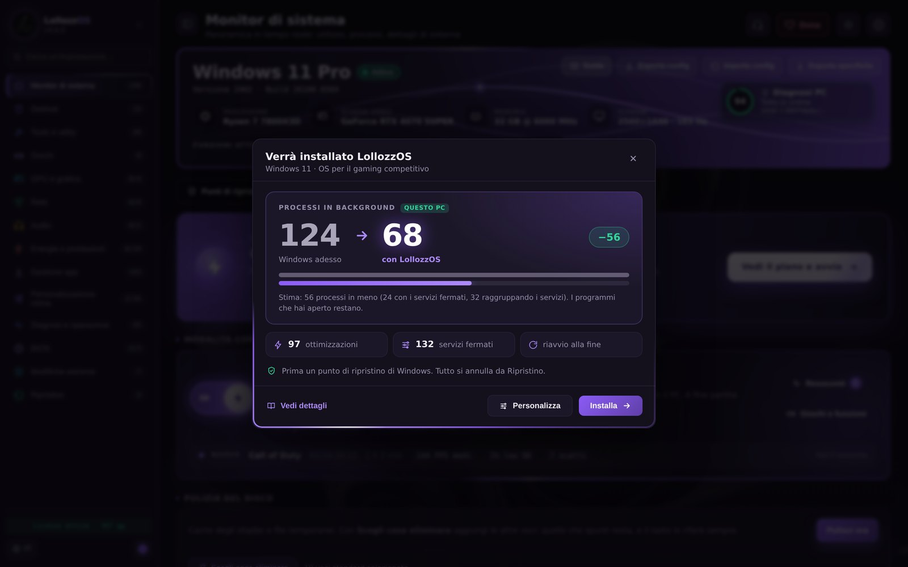
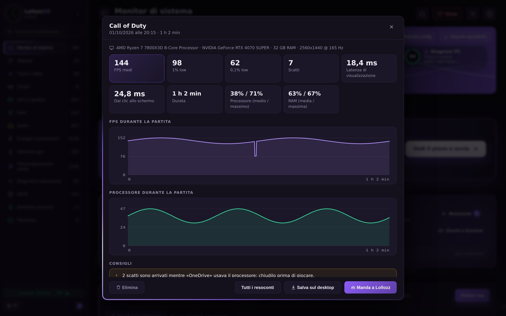
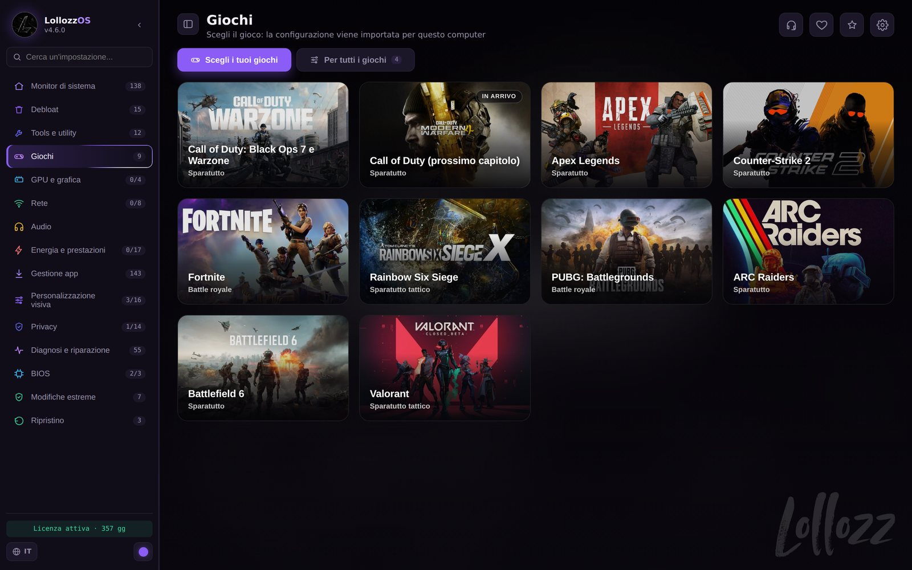
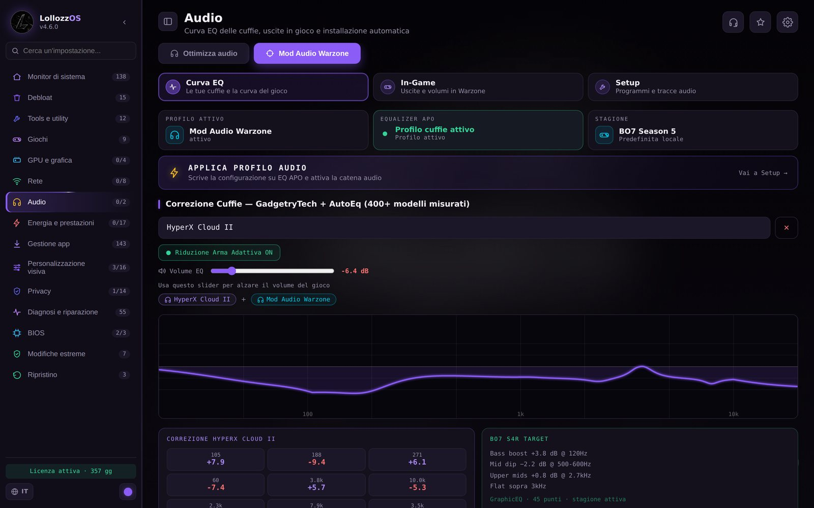
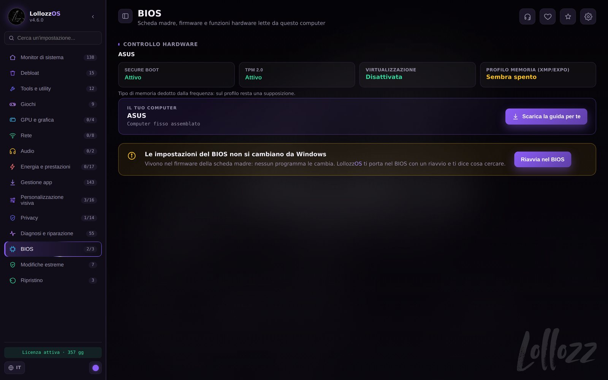

Il tuo PC, pronto per giocare.
LollozzOS mette in un’app sola quello che di solito è sparso fra decine di script, guide e programmi: meno processi in background, rete e scheda video impostate per il gioco, configurazioni pronte per i tuoi giochi. E ogni modifica si annulla.

Le ultime novità
Quello che è arrivato nelle ultime versioni. L’app controlla da sola gli aggiornamenti: quando esce una versione nuova te lo dice, la scarica e apre l’installazione (licenza, impostazioni e backup restano).
Aggiornato al 2 ottobre 2026Modalità competitiva intelligente
La accendi una volta e fa tutto da sola: parte quando avvii un gioco e si spegne quando lo chiudi, anche con LollozzOS chiusa. Il gioco a priorità alta, tutte le altre app in risparmio, timer a 0,5 ms.
Il resoconto di ogni partita
FPS medi, 1% e 0,1% low, gli scatti con quello che in quel momento usava il processore, la latenza e i consigli. Gli ultimi 30 restano nell’app: li salvi sul desktop o li mandi a Lollozz.
Ottimizza con un click, più chiaro
Prima vedi i processi di adesso, contati sul tuo PC, e la stima di quelli con LollozzOS, e “Vedi dettagli” con tutto quello che cambia. L’avanzamento sta nella Home; alla fine il PC si riavvia da solo e LollozzOS ti mostra il risultato.
Windows nel colore che vuoi
Accento, modalità scura o chiara, riquadro di selezione e 17 cursori in qualsiasi colore, con l’anteprima di Esplora file e i cursori veri. Con “Un colore per tutto” si colora anche l’app.
Mod Audio a un pulsante
“Applica Mod Audio Warzone” installa e configura tutto e ti chiede solo le cuffie. Poi la catena resta sotto controllo, dal gioco alle cuffie, e “Ripara” rimette quello che un aggiornamento ha rotto.
Il BIOS più recente
LollozzOS controlla sul sito del produttore se per la tua scheda madre c’è un BIOS più recente, lo scarica e lo verifica. L’aggiornamento lo fai tu, dal BIOS.
Il menu del tasto destro
Strumenti rapidi, Piani energetici, Mod Audio e Pad nel menu del tasto destro del desktop: l’overclock del pad, che LollozzOS copia sul PC, e il sito per calibrarlo.
Più sicuro
I punti di ripristino di Windows li crei e li usi dall’app, il Ripristino annulla tutto o una modifica alla volta, e se Windows ha un aggiornamento a metà LollozzOS aspetta prima di cambiare qualcosa.

Ottimizza con un click
Punto di ripristino, servizi superflui, privacy, ottimizzazioni per il gaming, energia, rete e l’aspetto LollozzOS, poi un riavvio. Prima di partire vedi i processi di adesso, contati sul tuo PC, e la stima di quelli con LollozzOS.
- “Vedi dettagli” mostra tutto quello che cambia, gruppo per gruppo. Qualche domanda (Wi-Fi, Bluetooth, stampa, Store, Xbox, colori…) decide cosa resta, con la risposta consigliata già segnata; con “Personalizza” accendi e spegni le voci una per una.
- La copia delle impostazioni attuali c’è sempre, ed è quella che permette di annullare tutto. Il punto di ripristino di Windows parte già segnato.
- L’avanzamento lo vedi nel riquadro della Home: la percentuale, il passo in corso e le fasi.
- Alla fine il PC si riavvia da solo dopo 20 secondi. Dopo il riavvio LollozzOS si riapre e ti mostra processi, servizi e avvio di Windows prima e dopo.

Modalità competitiva intelligente
La accendi una volta e non devi fare altro. Quando parte un gioco gli dà la precedenza, quando lo chiudi rimette tutto com’era. Funziona anche con LollozzOS chiusa, dopo il riavvio e con qualunque launcher.
- Gioco a priorità alta su tutti i core, scheda video più potente, Modalità gioco e timer di Windows a 0,5 ms.
- Tutte le altre app in risparmio: Discord, OBS e i programmi delle periferiche restano aperti e funzionano, ma lasciano il processore al gioco (se registri o trasmetti in x264, OBS può perdere fluidità). I browser a priorità bassa.
- Game Bar spenta, servizi che non servono per giocare in pausa, accelerazione del mouse spenta, piano energetico Lollozz Gaming, notifiche spente.
- Non mette mai in risparmio i processi di Windows, Microsoft Defender, gli anti-cheat, la catena audio, i driver video e i programmi che rimappano tastiera e controller; chi usa troppo processore viene solo rallentato, e a fine partita torna tutto com’era.
- A fine partita il resoconto: FPS medi, 1% e 0,1% low, scatti, latenza e consigli. Lo salvi sul desktop o lo mandi a Lollozz.
Ogni parte di Windows che conta per giocare
Ogni interruttore legge lo stato vero dal sistema: vedi quello che Windows sta facendo davvero, non quello che speri.
Monitor di sistema
CPU, GPU, RAM e dischi in tempo reale, Ottimizza con un click, la Modalità competitiva intelligente, la diagnosi del PC e la pulizia del disco.
Debloat
WinUtil, Win11Debloat e RemoveWindowsAI (Copilot, Recall e le altre funzioni IA) pronti da aprire, le app superflue, pubblicità e suggerimenti di Windows, la privacy e i servizi uno per uno.
GPU e grafica
Le ottimizzazioni della tua scheda (NVIDIA, AMD o Intel), il driver video con l’ultima versione da scaricare e le utility del produttore.
Rete
Rete impostata sulla latenza, test di 14 DNS, velocità, pacchetti persi, latenza sotto carico e priorità di rete per i giochi.
Audio
Equalizzazione sonorità per sentire meglio i passi, volume che non si abbassa nelle chiamate, ritardo audio minimo. E la Mod Audio Warzone.
Energia e prestazioni
Piani Quotidiano e Gaming fatti per il tuo PC, timer e reattività, risparmio di CPU, USB e PCI Express, interrupt MSI.
Privacy
Telemetria, pubblicità, cronologia delle attività, posizione, Cortana, segnalazione errori: tutto su una schermata, e “Blocca tutto” in un clic.
Diagnosi e riparazione
Salute dei dischi, spazio usato, 55 riparazioni divise per problema e il registro di tutto quello che è stato fatto.
BIOS
Secure Boot, TPM, virtualizzazione e profilo della RAM letti dal PC, il BIOS più recente dal sito del produttore, una guida BIOS per la tua scheda madre e “Riavvia nel BIOS”.
Personalizzazione
Sfondi e schermata di blocco, Windows nel colore che vuoi con 17 cursori, i suoni LollozzOS, i monitor e le scorciatoie nel tasto destro del desktop.
Gestione app
I programmi più usati installati dalla fonte ufficiale con winget, la disinstallazione e cosa parte con Windows.
Tools e utility
HWiNFO, CPU-Z, Autoruns, Intelligent Standby List Cleaner, Timer Resolution, FanControl e altri, pronti da aprire.
Modalità competitiva intelligente
La accendi una volta: parte da sola con i giochi, mette le altre app in risparmio e a fine partita ti dà il resoconto.
Una guida per il tuo PC
Scritta sul tuo computer: i tuoi componenti, i giochi installati, cosa conviene attivare e in che ordine.
Assistenza in un clic
Dal pulsante dell’assistenza mandi una segnalazione con tutto quello che serve per capire il problema, o apri la chat con i file già pronti.
Ripristino
“Ripristina tutto” annulla tutte le modifiche di LollozzOS; dalla cronologia ne annulli una alla volta. E i punti di ripristino di Windows li crei e li usi dall’app.

Configurazioni pronte, fatte per il tuo PC
Il file tarato da Lollozz, importato con un clic. Dove serve, i valori che dipendono dal computer si ricalcolano sul tuo: processore, schermo e scheda video. Per Valorant, i programmi per la risoluzione allargata.
- Prima si salva il tuo file: “Rimetti com’erano” lo riporta indietro.
- In “Per tutti i giochi”: Modalità gioco, schermo intero, mouse e tastiera.

Mod Audio Warzone
La catena audio della stagione per Warzone e Black Ops 7, con la correzione per le tue cuffie. Un pulsante: l’app installa e configura tutto da sola.
- “Applica Mod Audio Warzone”: Hi-Fi Cable, VoiceMeeter, Equalizer APO, HeSuVi e ReaPlugs dai siti ufficiali, configurati da soli, anche dentro Warzone. Ti chiede solo le tue cuffie.
- Curva EQ per le tue cuffie, fra oltre 1.600 misure (GadgetryTech, Earphones Archive, Paul Wasabi, Filk e AutoEq).
- Il preset BO7 di ArtTuneDB, usato con il permesso di ArtIsWar, e la Riduzione Arma Adattiva.
- La catena sotto controllo mentre LollozzOS è aperta (anche nella barra): all’apertura e ogni 30 minuti, mai durante una partita: se un aggiornamento rompe qualcosa, “Ripara”.
- “Prova il suono”: un soffio da ogni direzione del 7.1, attraverso la catena della Mod Audio.
- “Rimuovi tutto” rimette com’erano Windows, VoiceMeeter e Warzone.

La differenza fra uno strumento e un azzardo
Ogni ottimizzazione è scritta come dati: il valore quando è accesa e quello quando è spenta. Gli stessi dati servono ad applicarla, ad annullarla e a leggere com’è davvero.
- Prima di ogni modifica si salvano i valori di prima. Un interruttore si rispegne e torna com’era.
- Un punto di ripristino di Windows, già segnato in Ottimizza con un click e prima delle modifiche estreme. I punti di ripristino li crei e li usi anche dall’app.
- Se Windows ha un aggiornamento da completare, LollozzOS aspetta prima di cambiare qualcosa.
- Le modifiche estreme (controllo account, firewall, Windows Update…) sono chiuse a chiave. VBS, SmartScreen e le mitigazioni Spectre li spegni solo se lo scegli nelle domande; di partenza restano accesi.
- “Ripristina tutto” annulla ogni modifica dell’app, ma non riporta le app e i file eliminati, né tema, sfondo e colore. E disinstallare l’app non annulla da solo le ottimizzazioni: il programma di disinstallazione ti fa scegliere.
Guarda com’è fatta
Tre passi, e sei pronto
Scarica e installa
Scarica LollozzOS_Setup dalla pagina delle versioni e avvialo. Il programma d’installazione non è firmato: se Windows SmartScreen avvisa, “Ulteriori informazioni” e poi “Esegui comunque”.
Provalo per 24 ore
La prova gratuita dura 24 ore, una volta per computer: per attivarla ti chiede nome e cognome, email e telefono. Parti da “Ottimizza con un click” nella Home.
Attiva la licenza
Nell’app scegli LollozzOS o LollozzOS + Mod Audio e copia la richiesta di licenza: arriva anche a Lollozz. Scrivi sul Discord e incolla il codice di sblocco che ricevi. Vale per un computer.
Scegli la tua
LollozzOS
Tutta l’app, su un computer.
- Ottimizza con un click e tutte le sezioni
- Configurazioni dei giochi e guida per il tuo PC
- Aggiornamenti dall’app
LollozzOS + Mod Audio
Tutta l’app, più la Mod Audio Warzone.
- Tutto quello della licenza LollozzOS
- Mod Audio Warzone con installazione automatica
- Curva EQ per le tue cuffie e preset della stagione
La licenza è legata all’hardware del computer: non si rivende, non si condivide e non si trasferisce. Prezzi e dettagli sul Discord.
Domande frequenti
È sicuro per il mio PC?
Prima di ogni modifica LollozzOS salva i valori di prima, e in Ottimizza con un click e prima delle modifiche estreme ti propone anche un punto di ripristino di Windows. Ogni interruttore si rispegne, e “Ripristina tutto” annulla tutte le modifiche dell’app.
Su quali Windows funziona?
Windows 10 e Windows 11 a 64 bit. L’app parte come amministratore, perché cambia impostazioni di sistema.
In che lingua è l’app?
In italiano e in inglese: segue la lingua di Windows, e la cambi quando vuoi dal globo in basso a sinistra.
Mi serve la Mod Audio per usare LollozzOS?
No. La Mod Audio Warzone è un’aggiunta, con la licenza LollozzOS + Mod Audio. Tutto il resto funziona con la licenza LollozzOS.
La Modalità competitiva intelligente rallenta il PC quando non gioco?
No. Aspetta un gioco senza fare niente; quando ne parte uno cambia le precedenze solo per quella partita, e quando lo chiudi rimette tutto com’era. Se passi a un’altra finestra (Alt+Tab) le app tornano normali finché non torni nel gioco.
Dopo un aggiornamento di Windows devo rifare Ottimizza con un click?
Solo se serve: la diagnosi nella Home controlla il PC, e se Windows ha cambiato qualcosa e il punteggio scende sotto 80 il riquadro te lo propone di nuovo.
Windows dice che il programma non è riconosciuto. Cosa faccio?
Il programma d’installazione non è firmato, quindi al primo avvio Windows SmartScreen può avvisare. Clicca “Ulteriori informazioni” e poi “Esegui comunque”. Scaricalo solo da questa pagina o dal GitHub di LollozzOS.
Entra nella community
Assistenza, licenze, novità e la comunità italiana del gaming competitivo che prova e migliora LollozzOS.
Sostieni LollozzOS
Se LollozzOS ti è utile, con una donazione libera sostieni i prossimi aggiornamenti. Non sblocca niente: la licenza resta la stessa.
Dona con Ko-fiPronto a partire?
Scaricalo, provalo 24 ore e guarda la differenza con i tuoi occhi.